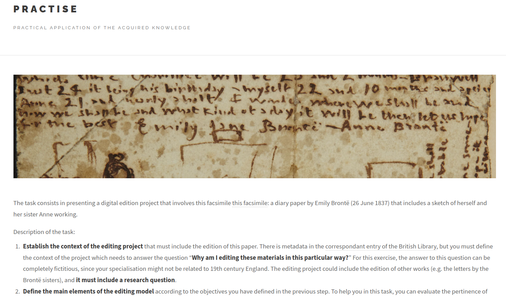

Lehrprobe: W1-Professur für Digital Humanities, Universität zu Köln
Outline
Preamble
Support materials
Prerequisite knowledge
Modeling and digital editing
Definition of model and modeling
Modeling within the digital editing workflow
Practical exercise
Preamble
Support materials
https://helenasabel.github.io/Lehrprobe A brief introduction to textual criticism and an overview
of the Neo-lachmann method as part of the prerequisite
knowledge Interactive flashcards related to the
stemmatic method and to different types of edition The video-recording of the lecture and the
slides The practical exercise

Bibliographic references and digital editing
resourcesA self-assesment rubric
Modeling and digital editing
Definitions
Model: either a representation of something for
purposes of study, or a design for realising something new.
Simplified, fictional/idealised representation of real
objects
Modeling: the heuristic process of
constructing and manipulating models
Egoistic modeling: to express specific research
ideas in cases where data is being created to support the creator’s
own research needs
Altruistic modeling: to serve as an interchange
format for some types of users and user communities where data is
typically being created and modeled with someone else’s needs in
mind
Organisation of entitities such as texts, documents and works along
with their relationships and how the were produced
Entities and primary relations of the WEMI-Model (Work,
Expression, Manifestation and Item model) (IFLA
2009: 14)
Modeling and digital editing
Organisation of entitities such as texts, documents and works along
with their relationships and how the were produced
Definition of the type and purpose for the
production of a new edition, its implied community of users and the
features best represent their various needs
Eide, Øyvind. 2014. “Ontologies, Data Modeling, and
TEI.” Journal of the Text Encoding Initiative,Issue 8
(December). doi:10.4000/jtei.1191.
IFLA. 2009. Functional Requirements for
Bibliographic Records. Final report. [Link]
Jannidis, Fotis, and Julia Flanders. 2013. “A
Concept of Data Modeling for the Humanities.” In Digital
Humanities 2013: Conference Abstracts, 237–39. Lincoln:
Center for Digital Research in the Humanities. [Link].